⛳ 버디맨으로 골프 대회 운영하기
동호회 월례회·창립 기념 대회처럼 여러 조가 함께 치는 대회를, 종이 스코어카드 걷기·엑셀 계산 없이 운영하는 방법이에요.
총무: 엑셀 조 편성표 복사 → 붙여넣기 (60명도 1분) → 단톡방에 링크 하나
당일: 조마다 한 명만 링크 열고 [이 조 기록하기] → 조원 4명 스코어를 적음 (가입·설치 없이 가능)
끝: 총무가 [대회 마감] → 신페리오·시상표 자동, 이미지로 단톡방 공유
골프장 종이 시상표와 뭐가 달라요?
| 골프장 스코어 출력 | 버디맨 | |
| 쓸 수 있는 곳 | 그 골프장만 (캐디 입력) | 어느 골프장이든 · 노캐디도 |
| 순위 확인 | 끝나고 종이로 | 경기 중 실시간 · TV 화면 |
| 다버디·다파 등 | 미리 요청해야 뽑아 줌 | 체크만 하면 자동 · 경기 중 현재 1위 |
| 행운상 | — | 입상자 빼고 자동 추첨 |
| 결과 공유 | 종이 사진 찍기 | 시상표 이미지로 바로 단톡방에 |
| 끝난 뒤 | 종이 한 장 | 모임 기록 · 내 스코어 · 복기로 계속 남음 |
누가 무엇을 하나요?
총무 대회 만들기 · 링크 보내기 · 마감 (약 10분)
조별 기록 담당 조마다 1명. 링크 열고 조원 스코어 적기 (60명이면 15명)
나머지 참가자 아무것도 안 해도 돼요. 링크로 실시간 순위만 보면 끝
1. 대회 전 — 총무 준비 (10분)
버디맨 열기 — 앱(앱스토어 '버디맨')이나 PC·휴대폰 브라우저에서 birdieman.co.kr/app. 총무는 결과를 계속 관리해야 하니 카카오·애플로 가입해 두세요 (3초).
[대회] 탭 → [새 대회 만들기] — 3단계로 끝나요.
① 언제·어디서: 골프장 찾기에서 검색(없으면 이름 그대로 입력) · 날짜는 [오늘·내일·모레] 또는 📅 다른 날
· 모임 이름·대회 이름은 미리 채워져 있어요. [이름 바꾸기]로 동호회 이름(예: 수원 새벽 골프회)과 대회 이름(예: 창립 1주년 기념 대회)을 넣으세요 — 다음 달 월례회도 이 모임에서 이어서 열어요
② 누구랑: 참가자 붙여넣기 (아래 3번)
③ 어떻게: 방식 — 신페리오(가장 많이 씀) · 스트로크 · 스테이블포드 · 매치
· 핸디 상한 (신페리오): 24(표준) · 30 · 36 중 선택 — 모임 규칙에 맞춰 고르세요
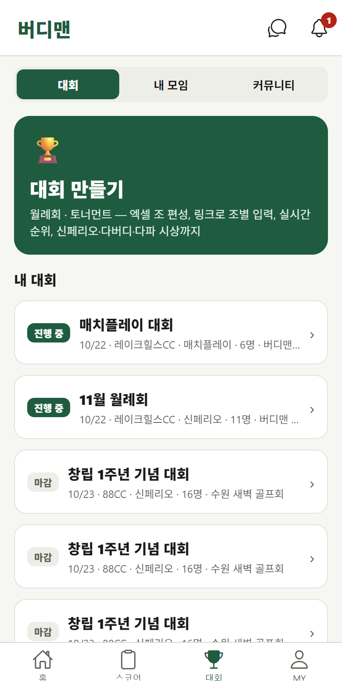
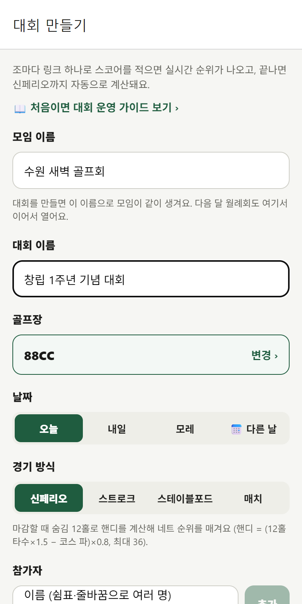
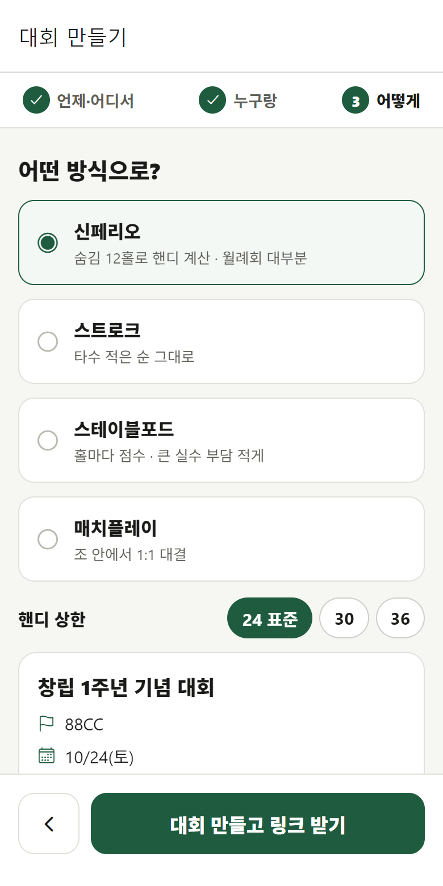
참가자 넣기 — 이름을 하나씩 칠 필요 없어요
방법 A. 엑셀 조 편성표가 있으면 (추천)
② 누구랑 단계에서 — 엑셀에서 한 줄 = 한 조로 된 칸들을 드래그해 복사 → 붙여넣기 칸에 붙이고 → [＋ 추가]. 조 편성이 그대로 들어가요. 맨 앞 칸에 '1조'가 있어도 괜찮아요.
| 1조 | 김철수 | 이영희 | 박민수 | 최지훈 |
| 2조 | 정우성 | 한지민 | 송강 | 유재석 |
| … | … | … | … | … |
| 15조 | … | … | … | … |
PC 웹에서 하면 가장 편해요. 카톡으로 받은 명단도 그대로 복사해 붙일 수 있어요.
방법 B. 명단만 있으면
이름을 줄바꿈이나 쉼표로 붙여넣기 → [추가] → 4명씩 자동으로 조가 나뉘어요. [🔀 섞기]로 랜덤 조 편성도 돼요.
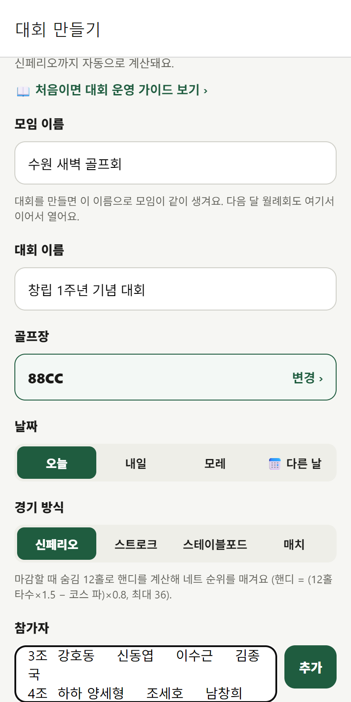
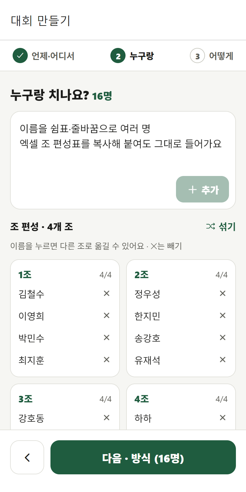
조 카드에서 이름을 누르면 다른 조에 [여기로]가 떠서 옮길 수 있어요. ✕는 빼기, [섞기]는 랜덤 편성. 한 조는 최대 4명, 대회 하나에 최대 30개 조(120명)까지예요.
[대회 만들고 링크 받기] → [💬 조원들에게 링크 보내기]로 동호회 단톡방에 링크 하나만 올리면 끝. 모두 같은 링크를 써요.
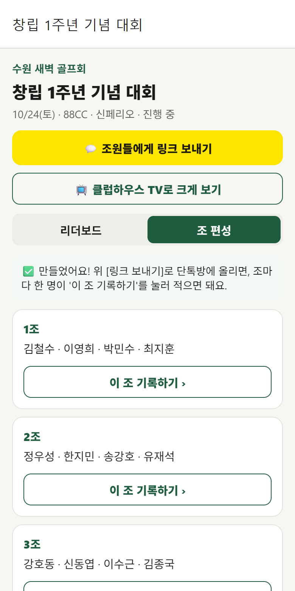
아래 안내문을 함께 올려 주세요 👇
조별 기록 담당 정하기 — 조마다 휴대폰에 익숙한 분 한 명. 단톡방에 "1조 ○○님, 2조 ○○님…"으로 미리 알려 두면 당일 훨씬 빨라요.
💡 대회 전에 총무님이 '연습 대회'를 하나 만들어 2~3홀만 입력해 보시면 당일에 질문받아도 바로 답할 수 있어요.
2. 대회 당일 — 조별 기록
단톡방 링크 열기 → [조 편성] 탭 → 내 조의 [이 조 기록하기 ›] → 내 이름 누르기. 가입하라는 화면 없이 바로 스코어카드가 열려요.
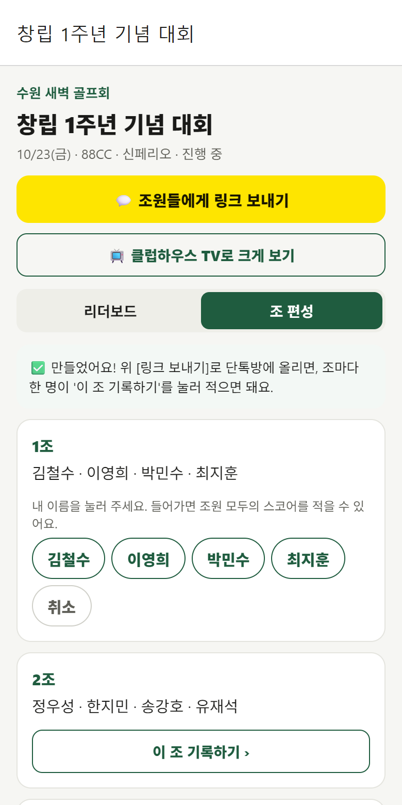
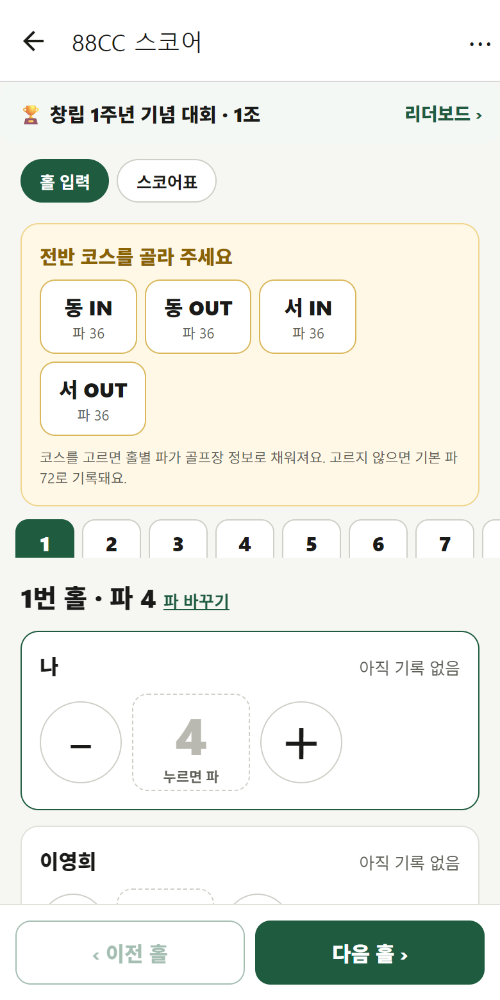
홀이 끝날 때마다 조원 4명 타수 입력. 숫자를 누르면 파, [−]는 버디, [+]는 보기부터 시작해요. 4명 다 적으면 다음 홀로 자동으로 넘어가요.
27홀 골프장이면 스코어카드 위의 '코스 조합 고르기'에서 오늘 도는 코스를 골라 주세요. 홀별 파가 맞아야 신페리오가 정확해요.
같은 링크의 [리더보드]에서 전체 순위가 15초마다 바뀌어요. 클럽하우스·식당 TV가 있으면 총무가 [📺 클럽하우스 TV로 크게 보기]를 켜 두세요.
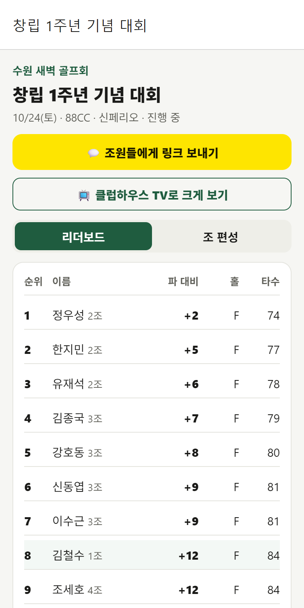
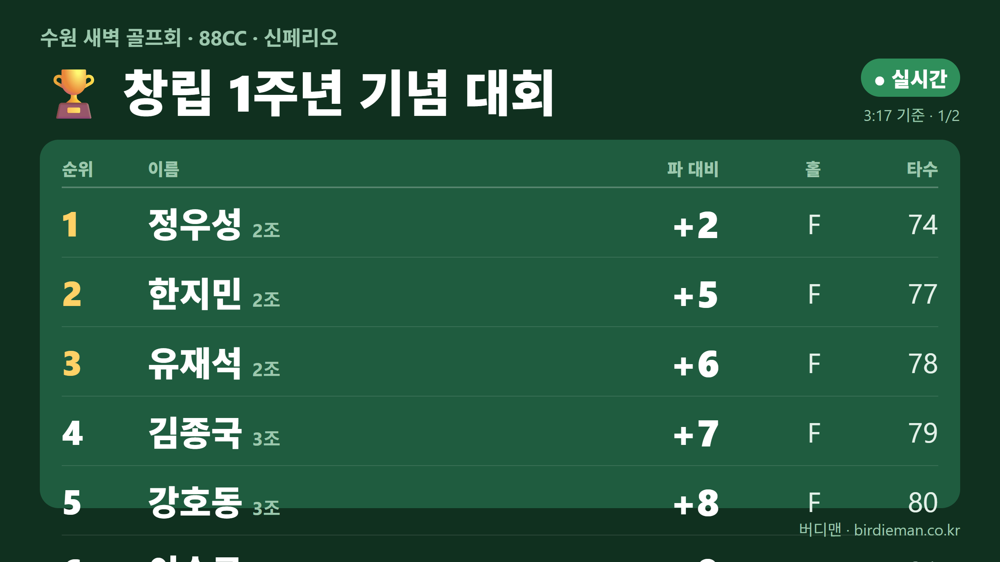
📺 클럽하우스 TV에 띄우는 법
대회 화면 [클럽하우스 TV로 크게 보기] → TV 주소(birdieman.co.kr/app/event/tv/…)가 나와요.
· [주소 보내기]: 카톡으로 주소 전송 — TV에 연결된 노트북이나 클럽하우스 직원에게
· [이 기기에서 크게]: 지금 폰·태블릿에서 바로 TV 화면 열기
TV에 띄우는 방법 셋 중 편한 걸로:
① 노트북 + HDMI: TV에 연결하고 주소 열기 (가장 확실)
② 스마트 TV: TV의 인터넷(브라우저) 앱에서 주소 입력
③ 휴대폰 미러링: 아이폰 화면 미러링(AirPlay) · 갤럭시 Smart View로 [이 기기에서 크게] 화면을 TV로
순위는 15초마다 저절로 바뀌고, 사람이 많으면 10명씩 넘겨 보여 줘요. 마감하면 시상 순위로 바뀌어요. 화면이 꺼지지 않게 TV·노트북 절전은 꺼 두세요.
3. 끝나고 — 시상
리더보드 아래 운영 칸에서
· 특별상 부문 체크: 다버디 · 다파 · 다보기 · 다더블 · 이글 (동점이면 모두 수상)
· 🍀 행운상 인원: 순위 입상자·메달리스트는 빼고 자동 추첨
· 신페리오 핸디 상한: 마감 전까지 24 · 30 · 36으로 바꿀 수 있어요
· 니어·롱기 수상자 이름 (선택)
→ [대회 마감 · 결과 발표].
경기 중에도 리더보드 아래 "지금 부문별 1위"로 다버디·다파 현재 선두가 보여요.
신페리오면 숨김 12홀(파4 8개 · 파3 2개 · 파5 2개)이 자동으로 정해지고 핸디·네트 순위가 계산돼요. 메달리스트(최저타)는 따로 표시돼요.
핸디 = (숨김 12홀 타수 × 1.5 − 코스 파) × 0.8, 최대 24(표준). 예) 파72 코스에서 숨김 12홀 54타 → (81 − 72) × 0.8 = 핸디 7.2. 12홀을 68타 넘게 쳐도 핸디는 24까지만 인정돼요(상한 24일 때). 계산식은 시상표 아래에도 함께 찍혀요.
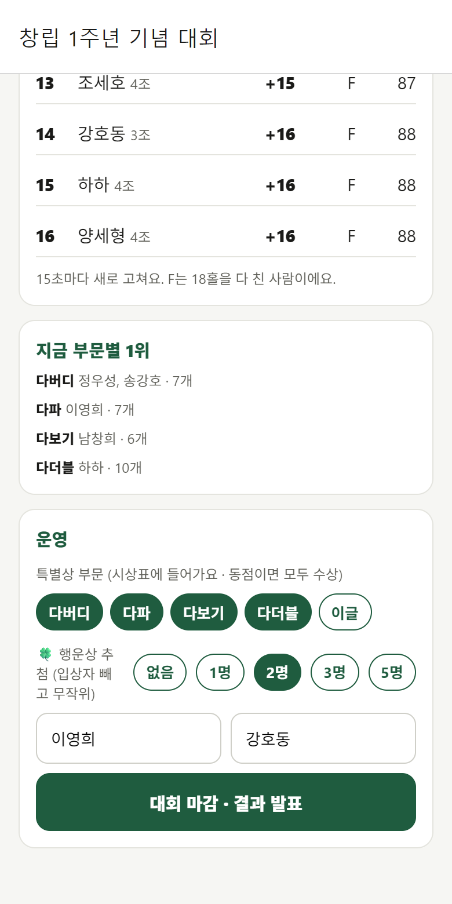
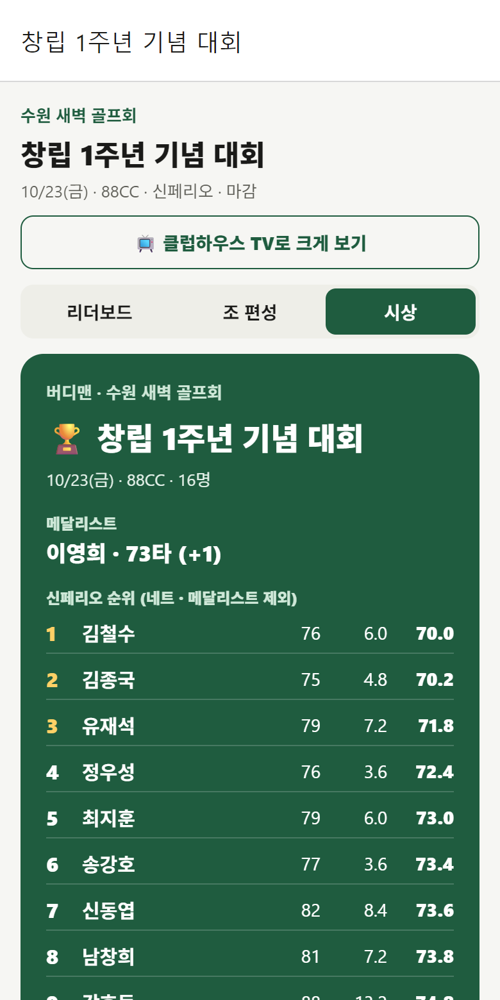
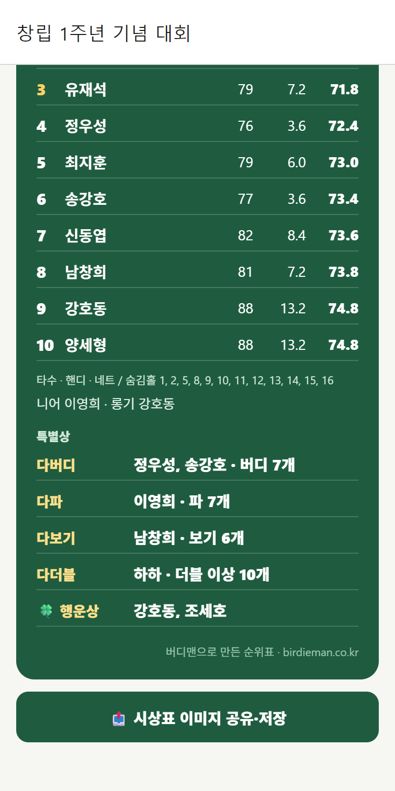
[📤 시상표 이미지 공유]로 단톡방에 결과 올리기. 시상식 화면으로 그대로 써도 돼요.
대회 당일 버디맨을 못 썼다면? — 골프장 스코어표 사진으로
골프장에서 받은 스코어 출력물(A4 전체 명단도 OK)이나 종이 스코어카드를 찍어 두세요.
[대회] 탭 → 📷 골프장 스코어표로 결과 만들기 → 사진 고르기(최대 6장) → [🤖 AI로 표 읽기]
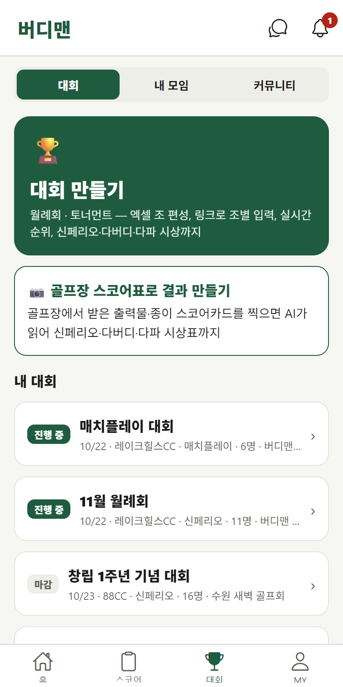
AI가 읽은 표가 나와요. 노란 칸은 못 읽은 곳, 빨간 합계는 출력물과 다른 사람이에요. 칸을 눌러 고친 뒤 대회 이름·날짜를 확인하고 [결과 만들기].
숫자 대신 ○·△·□ 같은 기호로 표시된 출력물도 범례를 보고 타수로 바꿔 읽어요. 합계만 있는 출력물은 순위만 나오고, 다버디·다파는 홀별 기록이 있어야 나와요.
이후는 위 3단계와 같아요 — 특별상 체크 · 행운상 · [대회 마감] → 신페리오 시상표 이미지로 단톡방에.
자주 묻는 질문
아니요. 조별 기록 담당 한 명만 있으면 되고, 그분도 설치·가입 없이 링크로 기록할 수 있어요. 나머지는 링크로 순위만 봐요.
아니요. 엑셀·카톡 명단을 복사해 붙여넣으면 한 번에 들어가요. 엑셀에서 한 줄에 한 조로 복사하면 조 편성까지 그대로예요.
같은 조의 다른 사람이 링크를 열고 [이 조 기록하기]에서 자기 이름으로 들어오면 이어서 적을 수 있어요. 지금까지 적은 스코어는 그대로 있어요.
[이 조 기록하기]를 누르면 4명이 안 찬 조에는 '명단에 없어요' 칸이 있어요. 그 자리로 들어가서 이름을 적으면 돼요.
네. 스코어카드에 내 점수를 9홀 이상 적으면 입력 화면 아래에 [복기 · AI 코치 조언 보기]가 떠요. 아까운 홀·만약에 계산과 함께 AI 코치 한 줄 평가(무료), 최근 라운드와 비교한 AI 정밀 분석(무료 3번)을 받을 수 있어요. 퍼팅·티샷·벌타까지 적으면 분석이 더 정확해져요. 대회 당일 조별로 적은 점수도 가입하면 그대로 내 기록이 돼서 같은 조언을 받아요.
링크로 들어온 뒤 카카오·애플로 가입하면 그날 스코어가 내 계정에 그대로 남아요. 이후 버디맨에서 핸디·복기·AI 분석을 볼 수 있어요.
골프장 출력은 그 골프장·그날 종이 한 장이에요. 버디맨은 어느 골프장에서든 경기 중 실시간 순위, 다버디·다파 자동 시상, 이미지 공유, 그리고 모임 기록이 계속 쌓여요. 둘을 같이 써도 돼요.
표준은 24예요(숨김 12홀 합계 +20타까지만 인정). 초보가 많은 모임은 30이나 36으로 올려 많이 친 분도 순위 경쟁을 할 수 있게 하기도 해요. 대회 전에 모임 규칙을 단톡방에 알려 두면 시상 때 이견이 없어요.
무료예요.
더 궁금한 점은 고객지원이나 앱의 MY › 고객센터로 물어봐 주세요.